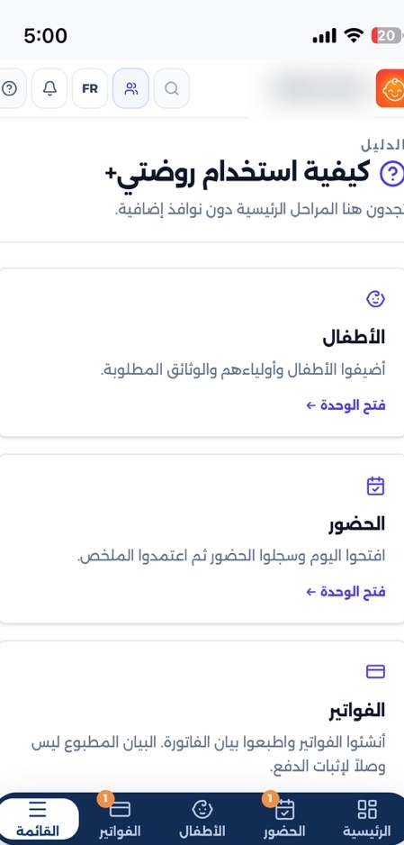
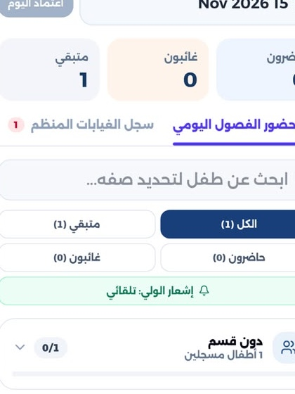

GUIDEأربع شاشات، بالترتيب.
الأطفال، الحضور، الفواتير، التقارير.
مراحل رئيسية، بلا نوافذ إضافية
ترتيب من الأطفال للتقارير
وقت 3 دقايق تقريباً
خطوات
8
لغة
AR
أول مرة على Rawdha+
أربع شاشات وتبدا الخدمة.
الدليل يوريك وين تلقاي كل وحدة، بالترتيب — بلا ما تفتّشي في القوائم.
مراحل
04
شاشات
4
دقايق
3
01
كيفية الاستخدام
مراحل رئيسية، بلا نوافذ زايدة.
02
الفريق
الأدوار والصلاحيات من الأول.
03
التقارير
من الشاشة للـCSV.
04
الحضور
الصباح في دقيقة وحدة.

01كيفية الاستخدام

02الفريق

03التقارير

04الحضور
«كيفية استخدام روضتي+» — مراحل رئيسية دون نوافذ إضافية.
هكذا يقدّم التطبيق الدليل.
افتحي الدليل←Rawdha+ · 09